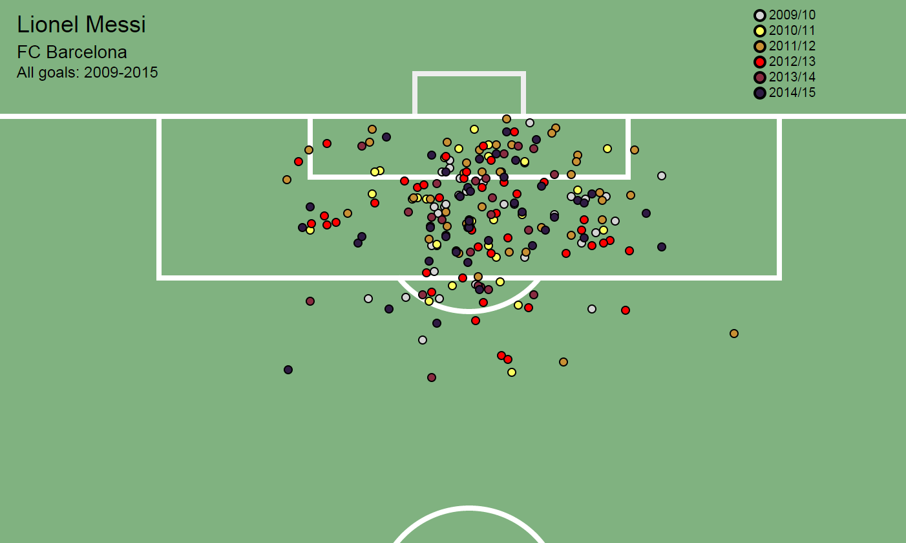

A visualization of Lionel Messi's open play goals and chances in La Liga 2009/2010 - 2014/15

Here are the locations of all his goals in La Liga 2009/2010 - 2014/15
More visualizations are available on my GitHub page. For more information please contact me via twitter.